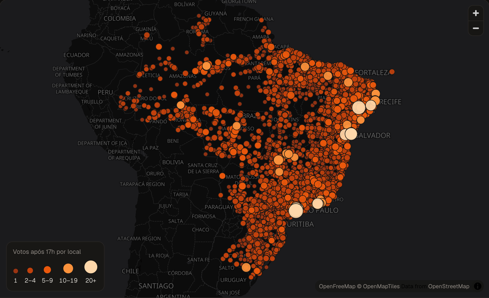

Eleições 2026 · 2º turno
Baixei 85 GBde logs das urnas, direto do TSE.
E contei, um por um, os votos que entraram depois das 17h.
Arraste para ver o que eu achei →
@flaviopangracio
O diário da urna
Toda urna anota o que acontece com ela, com hora e minuto.
Cada voto vira uma linha nesse diário. O TSE publica esses arquivos na internet, e qualquer pessoa pode baixar.
25/10/2026 16:59:41 · O voto do eleitor foi computado
25/10/2026 17:00:12 · O voto do eleitor foi computado
25/10/2026 17:01:03 · O voto do eleitor foi computado
Exemplo simplificado de um log de urna
497.895urnas no Brasil
127,9 mide votos registrados
@flaviopangracio
O que aconteceu no domingo
A votação fechava às 17h. No domingo, o STF mandou estender até as 19h no país inteiro.
O TSE cumpriu a decisão. E logo veio a pergunta nas redes:
"Isso mudou o resultado da eleição?"
@flaviopangracio
Depois das 17h
34.050
votos entraram nas urnas depois das 17h. É 1 a cada 3.750 votos do país.
17h18h19h
84% deles entraram nos primeiros 5 minutos. Era a fila de quem já estava na seção às 17h, e esses votos valeriam de qualquer jeito.
Das 17h05 até as 19h, o país inteiro registrou 5.302 votos.
@flaviopangracio
Presidente
Imagine que todos esses votos foram para o mesmo candidato.
Diferença entre os dois candidatos
4.430.191
Todos os votos depois das 17h
34.050
A diferença é 130 vezes maior. Não tem conta que vire esse resultado.
Fonte: resultado oficial do TSE e logs das urnas
@flaviopangracio
Governadores
Nos seis estados com 2º turno para governador, também não.
| Estado | Diferença | Votos após 17h |
|---|
| Rio Grande do Norte | 32.625 | 412 |
| Espírito Santo | 95.699 | 289 |
| Acre | 133.527 | 157 |
| Distrito Federal | 248.012 | 976 |
| Tocantins | 253.007 | 221 |
| Amazonas | 473.647 | 999 |
Na disputa mais apertada, no RN, a diferença foi 79 vezes maior que todos os votos depois das 17h no estado.
Fonte: resultado oficial do TSE e logs das urnas
@flaviopangracio
Por que isso importa
Dá para discordar da decisão do STF. Não dá para usar isso para dizer que a eleição foi roubada.
Os números estão aí: o horário extra não mudou nenhum resultado.
Os arquivos das urnas são públicos. Eu baixei, você também pode.
Quem diz que houve fraude precisa mostrar onde. "Eu acho" não é prova.
Democracia é aceitar o resultado, mesmo quando a gente perde.
@flaviopangracio
Confira você mesmo
Fiz um mapa com cada escola onde alguém votou depois das 17h.

O site e o código estão abertos. Link na bio.
flaviohugo14.github.io/logsdasurnas
@flaviopangracio